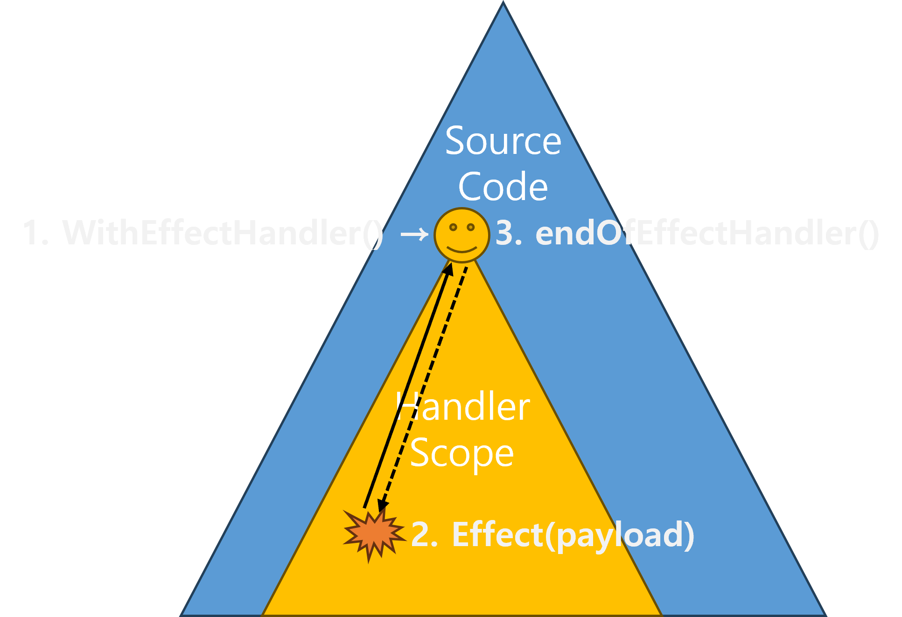

<!DOCTYPE html>
<html lang="en">
  <head>
    <meta charset="utf-8" />
    <meta name="viewport" content="width=device-width, initial-scale=1.0, maximum-scale=1.0, user-scalable=no" />

    <title></title>
    <link rel="stylesheet" href="dist/reveal.css" />
    <link rel="stylesheet" href="dist/theme/moon.css" id="theme" />
    <link rel="stylesheet" href="plugin/highlight/zenburn.css" />
	<link rel="stylesheet" href="css/layout.css" />
	<link rel="stylesheet" href="plugin/customcontrols/style.css">


    <script defer src="dist/fontawesome/all.min.js"></script>

	<script type="text/javascript">
		var forgetPop = true;
		function onPopState(event) {
			if(forgetPop){
				forgetPop = false;
			} else {
				parent.postMessage(event.target.location.href, "app://obsidian.md");
			}
        }
		window.onpopstate = onPopState;
		window.onmessage = event => {
			if(event.data == "reload"){
				window.document.location.reload();
			}
			forgetPop = true;
		}

		function fitElements(){
			const itemsToFit = document.getElementsByClassName('fitText');
			for (const item in itemsToFit) {
				if (Object.hasOwnProperty.call(itemsToFit, item)) {
					var element = itemsToFit[item];
					fitElement(element,1, 1000);
					element.classList.remove('fitText');
				}
			}
		}

		function fitElement(element, start, end){

			let size = (end + start) / 2;
			element.style.fontSize = `${size}px`;

			if(Math.abs(start - end) < 1){
				while(element.scrollHeight > element.offsetHeight){
					size--;
					element.style.fontSize = `${size}px`;
				}
				return;
			}

			if(element.scrollHeight > element.offsetHeight){
				fitElement(element, start, size);
			} else {
				fitElement(element, size, end);
			}		
		}


		document.onreadystatechange = () => {
			fitElements();
			if (document.readyState === 'complete') {
				if (window.location.href.indexOf("?export") != -1){
					parent.postMessage(event.target.location.href, "app://obsidian.md");
				}
				if (window.location.href.indexOf("print-pdf") != -1){
					let stateCheck = setInterval(() => {
						clearInterval(stateCheck);
						window.print();
					}, 250);
				}
			}
	};


        </script>
  </head>
  <body>
    <div class="reveal">
      <div class="slides"><section  data-markdown><script type="text/template"><!-- .slide: class="drop" -->
<div class="" style="position: absolute; left: 0px; top: 0px; height: 720px; width: 1280px; min-height: 720px; display: flex; flex-direction: column; align-items: center; justify-content: center" absolute="true">

# Effect-ive Go

### Focus on effects. Be yourself, respect your runtime.
<br>


박주형, 온더그라운드 

2025년 5월 22일
</div></script></section><section  data-markdown><script type="text/template"><!-- .slide: class="drop" -->
<div class="" style="position: absolute; left: 0px; top: 0px; height: 720px; width: 1280px; min-height: 720px; display: flex; flex-direction: column; align-items: center; justify-content: center" absolute="true">

## 최악의 테스트?

- 구현체와 끈적하게 들러붙은 테스트      
	- 코너케이스, 미묘한 타이밍 이슈를 현 구현체로 재현<!-- .element: style="font-size: 80%" -->
	- 구현체 리팩토링 → 테스트 무효화 → 리그레션<!-- .element: style="font-size: 80%" -->
	- 코드 경직, 변화에 유연하지 못함<!-- .element: style="font-size: 80%" -->
	- 코드 유지 보수 < 테스트 유지 보수<!-- .element: style="font-size: 80%; margin-bottom: 1em" -->
- 어쩌다 인터페이스가 아닌 구현체를 테스트하게 됐을까?
</div></script></section><section  data-markdown><script type="text/template"><!-- .slide: class="drop" -->
<div class="" style="position: absolute; left: 0px; top: 0px; height: 720px; width: 1280px; min-height: 720px; display: flex; flex-direction: column; align-items: center; justify-content: center" absolute="true">

## 고루틴 + 채널 / 메모리 공유

- 구현체 안에 동시성, 동기화, 오너십이 복잡하게 얽힘      
	- 여러 고루틴이 상호배제 및 채널 기반의 미묘한 타이밍 이슈<!-- .element: style="font-size: 80%" -->
	- Mock, spy, 내부 상태 노출 -> 디버깅?<!-- .element: style="font-size: 80%; margin-bottom: 1em" -->
- 테스트하기 어려운 CSP      
	- Preemptive goroutines<!-- .element: style="font-size: 80%" -->
	- 공유 채널 기반 암시적 동기화<!-- .element: style="font-size: 80%" -->
	- Non-deterministic select<!-- .element: style="font-size: 80%; margin-bottom: 1em" -->
- 대안이 없을까?
</div></script></section><section  data-markdown><script type="text/template"><!-- .slide: class="drop" -->
<div class="" style="position: absolute; left: 0px; top: 0px; height: 720px; width: 1280px; min-height: 720px; display: flex; flex-direction: column; align-items: center; justify-content: center" absolute="true">

## Separation of Concerns
- Divide & Conquer: M * N * L -> M + N + L <!-- .element: style="margin-bottom: 1em" -->
- 순수 함수: 표변환 가능(Tableizable)      
	- 핵심 데이터 변환 로직<!-- .element: style="font-size: 80%" -->
	- 테스트하기에 매우 용이, 명백하면 생략도 가능<!-- .element: style="font-size: 80%; margin-bottom: 1em" -->
- 부수 효과: 표변환 불가(Non-tableizable)      
	- 악마는 효과에 있다: Concurrency, Synchnonization, Ownership, Stream, State<!-- .element: style="font-size: 80%" -->
	- 순수 함수와 여러 부수 효과가 뒤섞여 일어나면 앞서 말한 테스트 지옥 시작 <!-- .element: style="font-size: 80%; margin-bottom: 1em" -->
- 피할 수 없는 부수 효과를 순수 함수와 섞지 않을 방법이 있을까?      
	- => **이펙트 패턴**
</div></script></section><section  data-markdown><script type="text/template"><!-- .slide: class="drop" data-background-color="#000" -->
<div class="" style="position: absolute; left: 0px; top: 0px; height: 720px; width: 1280px; min-height: 720px; display: flex; flex-direction: column; align-items: center; justify-content: center" absolute="true">

<div style="position: relative; width: 100%; height: 100%;">
  <video
    controls
    preload="auto"
    style="width: 100%; height: 100%; object-fit: contain; background-color: black;"
  >
    <source src="assets/Dontboreustakeittothechorus.mp4" type="video/mp4">
    Your browser does not support the video tag.
  </video>
</div>
</div></script></section><section  data-markdown><script type="text/template"><!-- .slide: class="drop" -->
<div class="" style="position: absolute; left: 0px; top: 0px; height: 720px; width: 1280px; min-height: 720px; display: flex; flex-direction: column; align-items: center; justify-content: center" absolute="true">

## Cached Database

<style>
  .reveal pre code {
    text-align: left;
	max-height: none;
	white-space: pre-wrap !important;
	word-break: break-word;
	overflow-wrap: anywhere;
	margin: 0 auto;      
  }
</style>

``` go
// http://github.com/on-the-ground/effect_ive_go/blob/main/examples/cached_database/main.go
...
	ctx, endOfDBHandler := state.WithEffectHandler[string, Person](
		false, // delegation == false
		state.NewCasStore(memDB),
		...
	)
	defer endOfDBHandler()
...
	ctx, endOfCacheHandler := state.WithEffectHandler[string, Person](
		true, // delegation == true
		state.NewSetStore(rist),
		...
	)
	defer endOfCacheHandler()
...
	ok, err := state.EffectInsertIfAbsent(ctx, key, person)
	log.Effect(ctx, log.LogInfo, "insert attempt", map[string]interface{}{
		"key":     key,
		"value":   person,
		"success": ok,
		"error":   err,
	})
```
</div></script></section><section  data-markdown><script type="text/template"><!-- .slide: class="drop" -->
<div class="" style="position: absolute; left: 0px; top: 0px; height: 720px; width: 1280px; min-height: 720px; display: flex; flex-direction: column; align-items: center; justify-content: center" absolute="true">

## 신지드는 향기를 남기고
</div></script></section><section  data-markdown><script type="text/template"><!-- .slide: class="drop" -->
<div class="" style="position: absolute; left: 0px; top: 0px; height: 720px; width: 1280px; min-height: 720px; display: flex; flex-direction: column; align-items: center; justify-content: center" absolute="true">

## Effect-ive Go != MagicBox

<split left="2" right="3" gap="0">

  - Effect-ive Go는 Go답게 부수효과 위임에 필요한 최소 인터페이스를 제안합니다
	  - context와 teardown 활용한 idiomatic effect handler 바인딩, 언바인딩<!-- .element: style="font-size: 80%" -->
	  - Effect type과 payload로 이펙트 선언<!-- .element: style="font-size: 80%" -->
	  - context에 match된 핸들러 고루틴에게 채널로 payload 전달<!-- .element: style="font-size: 80%; margin-bottom: 1em" -->
	


</split>
</div></script></section><section  data-markdown><script type="text/template"><!-- .slide: class="drop" -->
<div class="" style="position: absolute; left: 0px; top: 0px; height: 720px; width: 1280px; min-height: 720px; display: flex; flex-direction: column; align-items: center; justify-content: center" absolute="true">

## 왜 Context로 핸들러를 찾나요?
- 명시적 != 명료함: 핵심 로직이 드러나는가


```go
// Typical function
func ValidateUser(ctx context.Context, db *sql.DB, logger *Logger, metrics *Metrics, config *AppConfig, tracer *Tracer, requestID string, featureFlags map[string]bool, ...) (bool, error)
```

```go
// With injected handlers
func ValidateUser(ctx context.Context, stateHdl StateHandler, logHdl LogHandler, statHdl StatisticsHandler, configHdl ConfigHandler, obsrcHdl ObservationHandler,  ...) (bool, error)
```

```go
// With scoped handlers
// Only core logic dependencies are exposed; auxiliary effects are delegated via context
func ValidateUser(ctx context.Context, whiteList, blackList []User, user User) bool
```

```go
// Context abusing
// Any dependencies regarding with core logic must be shown on the function signature explicitly
func ValidateUser(ctx context.Context, user User) bool
```
</div></script></section><section  data-markdown><script type="text/template"><!-- .slide: class="drop" -->
<div class="" style="position: absolute; left: 0px; top: 0px; height: 720px; width: 1280px; min-height: 720px; display: flex; flex-direction: column; align-items: center; justify-content: center" absolute="true">

# Effects on Effect-ive Go
</div></script></section><section  data-markdown><script type="text/template"><!-- .slide: class="drop" -->
<div class="" style="position: absolute; left: 0px; top: 0px; height: 720px; width: 1280px; min-height: 720px; display: flex; flex-direction: column; align-items: center; justify-content: center" absolute="true">

## [Basis](https://pkg.go.dev/github.com/on-the-ground/effect_ive_go/effects)


- Effect 분류 : Resumable / FireAndForget / ~Abortive(not for Go)~

- Effect 선언부
	- context에서 해당 enum에 해당하는 핸들러 확보<!-- .element: style="font-size: 80%" -->
		- context는 handler discovery 목적으로만 사용
	- 핸들러 채널로 payload 전달<!-- .element: style="font-size: 80%" -->
	- 결과 대기하면 Resumable, 대기 없이 바로 나가면 FireAndForget<!-- .element: style="font-size: 80%; margin-bottom: 1em" -->
- Effect 핸들러
	- Resumable: 처리 마친 결과를 resume 채널로 전달<!-- .element: style="font-size: 80%" -->
	- Partitionable 핸들러는 partition 기반 병렬 처리<!-- .element: style="font-size: 80%" -->
</div></script></section><section  data-markdown><script type="text/template"><!-- .slide: class="drop" -->
<div class="" style="position: absolute; left: 0px; top: 0px; height: 720px; width: 1280px; min-height: 720px; display: flex; flex-direction: column; align-items: center; justify-content: center" absolute="true">

## [State](https://pkg.go.dev/github.com/on-the-ground/effect_ive_go/effects/state)
- Lock free effects
	- Insert, Load, CompareAndSwap, CompareAndDelete effects<!-- .element: style="font-size: 80%; margin-bottom: 1em" -->

- EventSourcingEffect
	- prefix로 state handler의 command operation을 구독<!-- .element: style="font-size: 80%" -->

- TTL 지원
- Delegation 활용한 multi-tier state
</div></script></section><section  data-markdown><script type="text/template"><!-- .slide: class="drop" -->
<div class="" style="position: absolute; left: 0px; top: 0px; height: 720px; width: 1280px; min-height: 720px; display: flex; flex-direction: column; align-items: center; justify-content: center" absolute="true">

## [Stream](https://pkg.go.dev/github.com/on-the-ground/effect_ive_go/effects/stream)

- Stream operator를 source가 닫히거나 context.Done 까지 상주 및 관리
	- EagerFilter, LazyFilter, Map, Merge, OrderBy, Pipe(bypass)<!-- .element: style="font-size: 80%; margin-bottom: 1em" -->

- Source를 안전하게 소비하도록 arbitor 제공
	- Subscribe, Unsubscribe<!-- .element: style="font-size: 80%" -->
</div></script></section><section  data-markdown><script type="text/template"><!-- .slide: class="drop" -->
<div class="" style="position: absolute; left: 0px; top: 0px; height: 720px; width: 1280px; min-height: 720px; display: flex; flex-direction: column; align-items: center; justify-content: center" absolute="true">

## [Lease](https://pkg.go.dev/github.com/on-the-ground/effect_ive_go/effects/lease)

- Stream, State 핸들러를 조합하여 핸들링
- External Semaphore
	- ResourceRegistration, Deregistration, Acquire, Release effects<!-- .element: style="font-size: 80%; margin-bottom: 1em" -->

- TTL  지원

```go
	// numOnwers == 1 이므로 Lock, ttl 지나면 expire됨
	ok, err := lease.ResourceRegistrationEffect(ctx, key, 1, ttl, pollInterval)

	ok, err = lease.AcquisitionEffect(ctx, key)

	/* Mutex zone */

	ok, err = lease.ReleaseEffect(ctx, key)

	ok, err = lease.ResourceDeregistrationEffect(ctx, key)
```
</div></script></section><section  data-markdown><script type="text/template"><!-- .slide: class="drop" -->
<div class="" style="position: absolute; left: 0px; top: 0px; height: 720px; width: 1280px; min-height: 720px; display: flex; flex-direction: column; align-items: center; justify-content: center" absolute="true">

## [Concurrency](https://pkg.go.dev/github.com/on-the-ground/effect_ive_go/effects/concurrency)

- Scope내 goroutine 관리 supervisor 제공
	- 절대로 부모와 자식은 context를 공유하지 하지 않습니다<!-- .element: style="font-size: 80%" -->

	- 따라서 상위의 cancelation 을 supervisory가 책임지고 전파<!-- .element: style="font-size: 80%" -->

	- handler scope 종료 시, 모든 자식들이 내려가는 것을 확인<!-- .element: style="font-size: 80%; margin-bottom: 1em" -->

- AwaitAll을 통해 여러 task를 한번에 대기 가능
</div></script></section><section  data-markdown><script type="text/template"><!-- .slide: class="drop" -->
<div class="" style="position: absolute; left: 0px; top: 0px; height: 720px; width: 1280px; min-height: 720px; display: flex; flex-direction: column; align-items: center; justify-content: center" absolute="true">

## [Task](https://pkg.go.dev/github.com/on-the-ground/effect_ive_go/effects/task)

- Go는 비동기 동기 함수를 구분하지 않습니다
	- concurrency를 CSP로 제공하기에 가능<!-- .element: style="font-size: 80%" -->

	- 하지만 비동기 동기 함수가 구분이 되지 않아 언제 hang이 될지 알 수 없음<!-- .element: style="font-size: 80%; margin-bottom: 1em" -->

- Task effect이 비동기 함수 호출과 결과 수신을 분리
</div></script></section><section  data-markdown><script type="text/template"><!-- .slide: class="drop" -->
<div class="" style="position: absolute; left: 0px; top: 0px; height: 720px; width: 1280px; min-height: 720px; display: flex; flex-direction: column; align-items: center; justify-content: center" absolute="true">

## [Binding](https://pkg.go.dev/github.com/on-the-ground/effect_ive_go/effects/binding)
- State는 동적으로 변하는 k-v를 관리하는 목적
- Binding은 정적으로 readonly만 하는 k-v store
- Config, env 조회에 활용
</div></script></section><section  data-markdown><script type="text/template"><!-- .slide: class="drop" -->
<div class="" style="position: absolute; left: 0px; top: 0px; height: 720px; width: 1280px; min-height: 720px; display: flex; flex-direction: column; align-items: center; justify-content: center" absolute="true">

## Time?

- 시간은 정확도가 생명 -> 위임 불가<!-- .element: style="margin-bottom: 1em" -->
- 런타임이 제공하는 nanosec 값이 의미가 있을까?<!-- .element: style="margin-bottom: 1em" -->
- Timespan
	- 시점을 점이 아닌 범위로 다루고 <!-- .element: style="font-size: 80%" -->
	- 해당 범위 안에 들어오도록 시스템에서 관리한다면<!-- .element: style="font-size: 80%" -->
	- 범위 시간을 신뢰할 수 있게 됨(SoC)<!-- .element: style="font-size: 80%" -->
</div></script></section><section  data-markdown><script type="text/template"><!-- .slide: class="drop" -->
<div class="" style="position: absolute; left: 0px; top: 0px; height: 720px; width: 1280px; min-height: 720px; display: flex; flex-direction: column; align-items: center; justify-content: center" absolute="true">

## Error?

- 오류 처리의 짧은 역사
	- Output as error: `return -1`<!-- .element: style="font-size: 80%" -->
	- Clean output with exception: `throw exp`<!-- .element: style="font-size: 80%" -->
	- Error as output: `return output, error`<!-- .element: style="font-size: 80%; margin-bottom: 1em" -->
- Go의 오류는 출력
	- 오류에 contextual message를 입히는 것 또한 도메인 로직<!-- .element: style="font-size: 80%" -->
</div></script></section><section  data-markdown><script type="text/template"><!-- .slide: class="drop" -->
<div class="" style="position: absolute; left: 0px; top: 0px; height: 720px; width: 1280px; min-height: 720px; display: flex; flex-direction: column; align-items: center; justify-content: center" absolute="true">

## Effect를 추출하고 남은 것은 순수할까?
</div></script></section><section  data-markdown><script type="text/template"><!-- .slide: class="function-as-a-table drop" -->
<div class="" style="position: absolute; left: 0px; top: 0px; height: 720px; width: 1280px; min-height: 720px; display: flex; flex-direction: column; align-items: center; justify-content: center" absolute="true">

## Function as Table

<style>
.function-as-a-table pre code {
  width: 60%;         

}
</style>
- 실용적인 언어의 함수는 언제든 impure할 수 있다
	- 정말 순수한 부분을 별도로 식별하는 것이 필요<!-- .element: style="font-size: 80%; margin-bottom: 1em" -->
- 순수함수는 lazy table
	- 같은 입력 -> 항상 같은 결과<!-- .element: style="font-size: 80%" -->
	- ~Local reasoning, referential transparency, substitution?~<!-- .element: style="font-size: 80%" -->
	- => Tableizable, 표변환 가능<!-- .element: style="font-size: 80%" -->

```go
fib = purefn.TableizeI1O1(func(n int) int {
	if n <= 1 {
		return n
	}
	return fib(n-1) + fib(n-2)
}, 32)
```
</div></script></section><section  data-markdown><script type="text/template"><!-- .slide: class="tableize-impl drop" -->
<div class="" style="position: absolute; left: 0px; top: 0px; height: 720px; width: 1280px; min-height: 720px; display: flex; flex-direction: column; align-items: center; justify-content: center" absolute="true">

## Tableize Implementation


<style>
.tableize-impl pre code {
  width: 60%;       
  margin: 0 auto;   

}
</style>
```go
func tableize[O any](
	pureFn func(...ComparableOrStringer) O,
	maxTableSize uint32,
) func(...ComparableOrStringer) O {
	memo := NewTrie[O](maxTableSize)
	return func(args ...ComparableOrStringer) O {
		keys := make([]ComparableOrString, len(args))
		for i, arg := range args {
			keys[i] = tableKey(arg)
		}
		v, ok := memo.Load(keys)
		if !ok {
			v = pureFn(args...)
			memo.Store(keys, v)
		}
		return v
	}
}
```
</div></script></section><section  data-markdown><script type="text/template"><!-- .slide: class="drop" -->
<div class="" style="position: absolute; left: 0px; top: 0px; height: 720px; width: 1280px; min-height: 720px; display: flex; flex-direction: column; align-items: center; justify-content: center" absolute="true">

## Benchmark

```
cpu: Intel(R) Core(TM) i7-14700

BenchmarkNaiveFib20-28                           55534       19869 ns/op       0 B/op      0 allocs/op

BenchmarkTableizedFib20-28                    24441051       71.02 ns/op      32 B/op      2 allocs/op

BenchmarkNaiveLevenshtein-28                    315432        3809 ns/op       0 B/op      0 allocs/op

BenchmarkTableizedLevenshtein/TrieSize_2-28    7247058       201.3 ns/op      96 B/op      4 allocs/op

BenchmarkTableizedLevenshtein/TrieSize_8-28    5805490       204.2 ns/op      96 B/op      4 allocs/op

BenchmarkTableizedLevenshtein/TrieSize_32-28   7311618       196.4 ns/op      96 B/op      4 allocs/op

BenchmarkNaiveDist-28                       1000000000      0.1012 ns/op       0 B/op      0 allocs/op

BenchmarkTableizedDist-28                      6820208       203.3 ns/op      96 B/op      4 allocs/op

PASS

coverage: 57.3% of statements
```
</div></script></section><section  data-markdown><script type="text/template"><!-- .slide: class="tableize-debug drop" -->
<div class="" style="position: absolute; left: 0px; top: 0px; height: 720px; width: 1280px; min-height: 720px; display: flex; flex-direction: column; align-items: center; justify-content: center" absolute="true">

## TableizeDebug
- Pure한 줄 알고 Tableize했다가 값이 흔들린다면?<!-- .element: style="margin-bottom: 1em" -->
- 배포 전에 CI, testbed, canary에서 검증용

<style>
.tableize-debug pre code {
  width: 60%;       
}
</style>
```go
func tableizeDebug[O ComparableEquatable](
	pureFn func(...ComparableOrStringer) O,
	maxTableSize uint32,
) func(...ComparableOrStringer) O {
	memo := NewTrie[O](maxTableSize)
	return func(args ...ComparableOrStringer) O {
		...
		actual = pureFn(args...)
		loaded, ok := memo.Load(keys)
		if ok {
			if !Equals(actual, loaded) {
				panic("Do not tableize impure functions")
			}
		} else {
			memo.Store(keys, v)
		}
		return v
	}
}
```
</div></script></section><section  data-markdown><script type="text/template"><!-- .slide: class="drop" -->
<div class="" style="position: absolute; left: 0px; top: 0px; height: 720px; width: 1280px; min-height: 720px; display: flex; flex-direction: column; align-items: center; justify-content: center" absolute="true">

## Novelty of Effect-ive Programming

- Focus on effects
	- 수단이 아닌 목적을 강조<!-- .element: style="font-size: 80%; margin-bottom: 1em" -->
- Be yourself, respect your runtime
	- 각 언어만의 고유한 관점과 방식으로 effect 처리<!-- .element: style="font-size: 80%" -->
</div></script></section><section  data-markdown><script type="text/template"><!-- .slide: class="drop" -->
<div class="" style="position: absolute; left: 0px; top: 0px; height: 720px; width: 1280px; min-height: 720px; display: flex; flex-direction: column; align-items: center; justify-content: center" absolute="true">

이펙트와 순수 함수 격리 및 식별이 끝났습니다.<br>
Go 같아 보이나요? 함수형 같아 보이나요?<br>
<br>
**Effect-ive Go**입니다.<br>
<br>
제가 새롭게 만든 것은 없습니다.<br>
저는 Go의 정신을 증류했을 뿐입니다.
</div></script></section><section  data-markdown><script type="text/template"><!-- .slide: class="drop" -->
<div class="" style="position: absolute; left: 0px; top: 0px; height: 720px; width: 1280px; min-height: 720px; display: flex; flex-direction: column; align-items: center; justify-content: center" absolute="true">

## PS: Haskell vs Effect-ive Programming

- 하스켈은 수학으로 추상
	- 함수를 입출력이 하나인 순수함수: output = f(input)<!-- .element: style="font-size: 80%" -->
	- 가능한 순수함수 합성으로 프로그램 대부분을 구현하고자 함<!-- .element: style="font-size: 80%; margin-bottom: 1em" -->
- 프로그램에서 이펙트는 필수이지만 함수 안에서 수행하고 싶지 않음
	- 따라서 runX, main 같은 순수하지 않은 특정 영역에서만 수행<!-- .element: style="font-size: 80%; margin-bottom: 1em" -->
- 이때까지 이펙트 수행을 Lazy하게 미룰 방법이 필요 => 모나드
	- 이펙트를 container에 실어서 출력으로 보내자. Either[T]<!-- .element: style="font-size: 80%" -->
	- 입력은 Effect가 없는데 출력은 Effect가 있으면 어떻게 연결하지? <!-- .element: style="font-size: 80%" -->
		- `f1: func (T1)  Either[T2], f2: func (T2) Either[T3]`<!-- .element: style="font-size: 80%" -->
	- 모나드: 컨테이너화 된 출력과 깨끗한 입력을 연결짓는 인터페이스<!-- .element: style="font-size: 80%; margin-bottom: 1em" -->
- 하지만 여러 Effect가 nested 되면서 문제 발생
	- `Task[Either[T]] != Either[Task[T]]`<!-- .element: style="font-size: 80%" -->
	- `StateReaderTaskEither[T]`<!-- .element: style="font-size: 80%" -->
</div></script></section><section  data-markdown><script type="text/template"><!-- .slide: class="drop" -->
<div class="" style="position: absolute; left: 0px; top: 0px; height: 720px; width: 1280px; min-height: 720px; display: flex; flex-direction: column; align-items: center; justify-content: center" absolute="true">

## PS: Haskell vs Effect-ive Programming
- 사람답게 살자
	- 사람은 미뤄진 일의 중첩을 생각하기 힘듦<!-- .element: style="font-size: 80%" -->
	- Eager하게 effect를 해결하자<!-- .element: style="font-size: 80%" -->
	- 그런데 내가 수행하고 싶진 않고 이펙트는 지금 해결해야하니 남을 시키자<!-- .element: style="font-size: 80%; margin-bottom: 1em" -->
-  핵심 로직이 아니라 패턴화, 기계적 처리 가능
	- 각 이펙트 패턴을 잘 처리할 핸들러를 두고 핸들러와 소통하자<!-- .element: style="font-size: 80%" -->
	- 이펙트 핸들러는 어디있지? -> DI말고 IoC<!-- .element: style="font-size: 80%; margin-bottom: 1em" -->
- 핸들러로 컨텍스트 스위칭해서 이펙트를 처리하고 돌아올 방법이 필요
	- 저수준 추상: Continuation Passing Style <!-- .element: style="font-size: 80%" -->
	- 고수준 추상: Communicating Sequential Processes<!-- .element: style="font-size: 80%" -->
</div></script></section></div>
    </div>

    <script src="dist/reveal.js"></script>

    <script src="plugin/markdown/markdown.js"></script>
    <script src="plugin/highlight/highlight.js"></script>
    <script src="plugin/zoom/zoom.js"></script>
    <script src="plugin/notes/notes.js"></script>
    <script src="plugin/math/math.js"></script>
	<script src="plugin/mermaid/mermaid.js"></script>
	<script src="plugin/chart/chart.min.js"></script>
	<script src="plugin/chart/plugin.js"></script>
	<script src="plugin/customcontrols/plugin.js"></script>

    <script>
      function extend() {
        var target = {};
        for (var i = 0; i < arguments.length; i++) {
          var source = arguments[i];
          for (var key in source) {
            if (source.hasOwnProperty(key)) {
              target[key] = source[key];
            }
          }
        }
        return target;
      }

	  function isLight(color) {
		let hex = color.replace('#', '');

		// convert #fff => #ffffff
		if(hex.length == 3){
			hex = `${hex[0]}${hex[0]}${hex[1]}${hex[1]}${hex[2]}${hex[2]}`;
		}

		const c_r = parseInt(hex.substr(0, 2), 16);
		const c_g = parseInt(hex.substr(2, 2), 16);
		const c_b = parseInt(hex.substr(4, 2), 16);
		const brightness = ((c_r * 299) + (c_g * 587) + (c_b * 114)) / 1000;
		return brightness > 155;
	}

	var bgColor = getComputedStyle(document.documentElement).getPropertyValue('--r-background-color').trim();
	var isLight = isLight(bgColor);

	if(isLight){
		document.body.classList.add('has-light-background');
	} else {
		document.body.classList.add('has-dark-background');
	}

      // default options to init reveal.js
      var defaultOptions = {
        controls: true,
        progress: true,
        history: true,
        center: true,
        transition: 'default', // none/fade/slide/convex/concave/zoom
        plugins: [
          RevealMarkdown,
          RevealHighlight,
          RevealZoom,
          RevealNotes,
          RevealMath.MathJax3,
		  RevealMermaid,
		  RevealChart,
		  RevealCustomControls,
        ],


    	allottedTime: 120 * 1000,

		mathjax3: {
			mathjax: 'plugin/math/mathjax/tex-mml-chtml.js',
		},
		markdown: {
		  gfm: true,
		  mangle: true,
		  pedantic: false,
		  smartLists: false,
		  smartypants: false,
		},

		mermaid: {
			theme: isLight ? 'default' : 'dark',
		},

		customcontrols: {
			controls: [
			]
		},
      };

      // options from URL query string
      var queryOptions = Reveal().getQueryHash() || {};

      var options = extend(defaultOptions, {"width":1280,"height":720,"margin":0.1,"controls":true,"progress":true,"slideNumber":false,"transition":"slide","transitionSpeed":"default"}, queryOptions);
    </script>

    <script>
      Reveal.initialize(options);
    </script>
  </body>

  <!-- created with Advanced Slides -->
</html>
